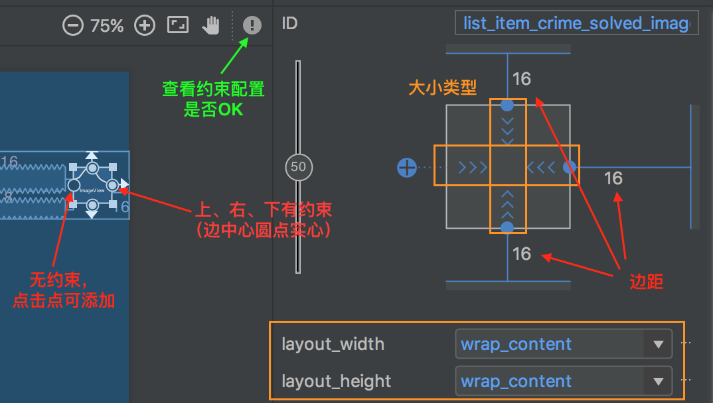

- 第7章 UI fragment与fragment管理器
- 第8章 使用RecyclerView显示列表
- 第9章 使用布局与组件创建用户界面
- 第10章 使用fragment argument
- 第11章 使用ViewPager
- 第12章 使用对话框
第7章 UI fragment与fragment管理器
7.2 引入fragment
采用fragment而不是activity来管理应用UI，可绕开activity使用规则的限制，比如列表明细类应用（明细视图切换时不需要再销毁activity）；其还适用于其他类型的应用，比如可以更方便地构建分页界面、动画侧边栏等定制界面；
fragment是一种控制器对象，activity可委派其完成一些任务，如管理用户界面（一整屏、整屏的一部分）等；
- 管理用户界面的fragment又称为UI fragment，其包含了用户可以交互的视图UI元素；
- activity视图可预留位置供fragment视图插入；若有多个fragment要插入，activity视图也可提供多个位置；
7.3 着手开发CriminalIntent
首先设计一个名为CrimeFragment的UI fragment来管理用户界面（与activity在GeoQuiz应用中的作用差不多），再设计一个名为CrimeActivity的activity来托管CrimeFragment实例；
- activity在其视图层级里提供一处位置用来放置fragment的视图，fragment本身不具有在屏幕上显示视图的能力；只有将fragment视图放置在activity的视图层级结构中，fragment视图才能显示在屏幕上；
Google在API 11引入了fragment，并有两个版本的fragment实现可以使用：原生版本、支持库版本；
- 原始版本的实现内置在设备系统中，在不同版本设备上运行可能有不同的表现；
- 支持库版本的实现会打包到应用中，在不同版本设备上运行有着相同的表现；
- 支持库版fragment来自于AppCompat库（
compile 'com.android.support:appcompat-v7:25.0.1'）；使用时需要将其加入到项目的依赖关系中；
添加依赖关系的方式：
- 修改应用模块的build.gradle的
dependencies； - File -> Project Structure -> 选择应用模块 -> 点击右边的Dependencies选项页 -> 点击+号 -> Library dependency；
- 修改应用模块的build.gradle的
对于未复制到项目中的依赖项，应用编译时Gradle会下载依赖包并自动导入到项目中；
依赖项字符使用了Maven坐标模式：
groupId:artifactId:version；- groupId通常是类库的包名，Maven仓库中的唯一标识；
- artifactId是特定库名，比如support-v4、support-v13、appcompat-v7、gridlayout-v7；-vX标识所支持的最低API级别；
- version标识类库的的版本；
7.4 托管UI fragment
activity托管UI fragment必须做到
两件事：- a. 在布局中为fragment的视图安排位置；
- b. 管理fragment实例的生命周期；
activity托管UI fragment有两种方式：
- a. 在activity布局文件中添加fragment控件元素：
- 简单但不灵活，activity的视图绑定了fragment及其视图，无法替换fragment视图；
- 这种方式无需添加别的配置就已经做到上面的
两件事；
- b. 在activity代码中添加fragment对象：
- 复杂但灵活，但也是唯一可以动态控制fragment的方式，可随时添加移除替换fragment；一般都使用该方式；
- 这种方式需要我们自己处理上面的
两件事；
- a. 在activity布局文件中添加fragment控件元素：
虽然是在托管activity代码中添加UI fragment，但还是要在activity视图层级结构中为fragment视图安排位置；
- 为了在布局中为fragment视图安排位置，需要定义个
容器视图（比如FrameLayout控件元素）；这个容器视图是通用的，不局限于托管某一个fragment； - CrimeActivity视图由FrameLayout组件组成，FrameLayout组件为CrimeFragment视图安排了显示位置；
- 为了在布局中为fragment视图安排位置，需要定义个
fragment生命周期与activity生命周期类似，覆盖相应的方法完成相应的任务；一个关键区别在于，fragment的生命周期方法（public的，activity需要调用；activity是protected的）由托管activity而不是操作系统调用；操作系统不关心activity用来管理视图的fragment，fragment的使用是activity内部的事情；
7.5 创建UI fragment
创建UI fragment和创建activity的步骤是一样的：定义布局文件、创建fragment并设置布局文件，配置布局文件中的组件；
fragment也有onCreate、onSaveInstanceState等方法，但是fragment的视图并不是在onCreate方法中生成，而是在onCreateView方法中完成的；
fragment的
public View onCreateView(LayoutInflater inflater, ViewGroup container, Bundle savedInstanceState)：- 该方法由托管activity调用， 实例化fragment视图的布局，然后将实例化的View返回给托管activity；
LayoutInflater、ViewGroup是实例化布局的必要参数，Bundle用来存储恢复数据，可供该方法从保存状态下重建视图；
@Override public View onCreateView(LayoutInflater inflater, ViewGroup container, Bundle savedInstanceState) { View v = inflater.inflate(R.layout.fragment_crime, container, false); return v; }
在onCreateView()方法中，fragment的视图是直接通过用
LayoutInflater.inflate(...)方法生成的，之后完成布局中组件的设置（如给组件添加监听等）；LayoutInflater.inflate(...)方法参数：- 第一个参数为布局资源ID；
- 第二个参数为视图的父视图；
- 第三个参数为是否将生成的视图添加到父视图中；
fragment的onCreateView几乎等同于activity的onCreate；唯一区别只是：在获取内部的组件时，activity中是调用activity的findViewById（本质还是调用view的findViewById），fragment中是调用view的findViewById；
7.6 向FragmentManager添加UI fragment
FragmentManager负责管理fragment并将它们的视图添加到activity的视图层级结构中；FragmentManager的具体管理：fragment队列、fragment事务回退栈（之后会学习）；
- a. 先调用activity的
getSupportFragmentManager()获取FragmentManager对象； - b. 通过调用fragmentManager的
findFragmentById()方法获取该fragment； c. 若获取失败，则创建一个fragment对象；
- a). 之后调用fragmentManager.beginTransaction()开启fragment事务，返回FragmentTransaction对象；
- b). 将相关操作（比如add()、delete()等）添加到fragment事务（FragmentTransaction对象）中；
- c). 提交fragment事务；
@Override protected void onCreate(Bundle savedInstanceState) { super.onCreate(savedInstanceState); setContentView(R.layout.activity_crime); FragmentManager fm = getSupportFragmentManager(); Fragment fragment = fm.findFragmentById(R.id.fragment_container); if (fragment == null) { fragment = new CrimeFragment(); fm.beginTransaction() .add(R.id.fragment_container, fragment) .commit(); } }
- a. 先调用activity的
fragment事务被用来添加、移除、附加、分离或替换fragment队列中的fragment，这是使用fragment动态组装和重新组装用户界面的关键；而FragmentManager管理着fragment事务回退栈；
add()方法有两个参数：容器视图资源ID（定义在activity的布局文件中的FrameLayout组件的资源ID）、新建的fragment对象；
容器视图资源ID有两个作用：
- a. 告诉FragmentManager对象，fragment的视图应该放置在activity的视图的什么位置；
- b. 唯一标识FragmentManager队列中的fragment；可以从fragmentManager中获取相关的fragment；
当设备旋转或回收内存时，Android系统销毁activity，其FragmentManager对象会保存fragment队列；而当activity重建时，新的FragmentManager会首先获取保存的队列，然后重建fragment队列，从而恢复到原来的状态；故需要先判断fragment是否已存在
fm.findFragmentById(R.id.fragment_container，若存在则直接返回，否则走添加fragment的流程；activity的FragmentManager负责调用队列中fragment的生命周期方法；
- a. 添加fragment供FragmentManager管理时，onAttach(Context)、onCreate(Bundle)、onCreateView(...)方法被调用；
- b. 在托管的activity的onCreate()方法中添加fragment后，fragment的onActivityCreated()方法会被调用；
- c. 若在托管的activity处于运行时添加fragment，FragmentManager立即驱赶fragment，调用一系列必要的生命周期方法，与activity的最新状态保持同步；依次调用onAttach(Context)、onCreate(Bundle)、onCreateView(...)、onActivityCreated(Bundle)、onStart()、onResume()；
- d. fragment与activity的状态一旦同步完成后，托管activity的FragmentManager就会边接收操作系统的调用指令，边调用fragment的其他生命周期方法，继续保持状态一致；
7.8 深入学习：fragment与支持库
support-v4库支持实现fragment功能，可以在该库中找到android.support.v4.app.Fragment；support-v4库中也有一个FragmentActivity（android.support.v4.app.FragmentActivity）；若要使用支持库版fragment，应用的activity必须继承FragmentActivity；
AppCompatActivity就是FragmentActivity的子类；引入了AppCompat库，就能使用支持库版fragment；若只想用support-v4库也可以，在项目里引入该库后，把各个activity的父类从AppCompatActivity改为FragmentActivity即可；
第8章 使用RecyclerView显示列表
8.3 RecyclerView、ViewHolder和Adapter
RecyclerView是ViewGroup的子类，每个列表项都是作为一个独立的View子对象显示的；
RecyclerView的任务仅限于回收和定位屏幕上的View；列表项View能够显示数据还离不开另外两个类的支持：ViewHolder子类和Adapter子类；
- ViewHolder是每个列表项的View布局的容器；该view布局（ViewHolder通过itemView属性引用着）可以是系统内置的（比如simple_list_item_1），也可以是自定义的；view布局都会被封装到ViewHolder中，这样对adapter来说统一了接口；
- RecyclerView自己不创建ViewHolder，该任务实际是由Adapter来完成的；Adapter从模型层获取数据，绑定到ViewHolder上，然后提供给RecyclerView显示；
Adapter工作流程：
a. 首先，RecyclerView调用adapter的
getItemCount()方法，告诉RecyclerView列表中有多少个列表项；b. 接着，RecyclerView调用adapter的
createViewHolder(ViewGroup, int)方法创建ViewHolder及其要显示的视图，告诉RecyclerView每个列表项的View的样子；c. 最后，RecyclerView调用
onBindViewHolder(ViewHolder, int)方法，根据参数信息，将列表位置对应的模型数据绑定（填充）到ViewHolder视图上；private class CrimeAdapter extends RecyclerView.Adapter<CrimeHolder> { ... @Override public CrimeHolder onCreateViewHolder(ViewGroup parent, int viewType) { LayoutInflater layoutInflater = LayoutInflater.from(getActivity()); return new CrimeHolder(layoutInflater, parent); } @Override public void onBindViewHolder(CrimeHolder holder, int position) { Crime crime = mCrimes.get(position); holder.bind(crime); // 自定义bind方法，绑定数据（给子控件设置属性值） } @Override public int getItemCount() { return mCrimes.size(); } }
为节约时间和内存，一旦创建了够用的ViewHolder，RecyclerView就会停止调用createViewHolder()方法创建新的ViewHolder，之后使用ViewHolder时（执行onBindViewHolder()时）回收利用旧的ViewHolder；
RecyclerView类来自于Google支持库（recyclerview-v7）；
RecyclerView还需要LayoutManager的支持；RecyclerView负责显示视图，LayoutManager负责摆放列表项、定义屏幕滚动行为；
LayoutManager有系统内置的实现，比如LinearLayoutManager是以竖直列表的形式展示列表项，GridLayoutManager是以网格的形式展示列表项，也可以使用第三方的实现；
@Override public View onCreateView(LayoutInflater inflater, ViewGroup container, Bundle savedInstanceState) { View view = inflater.inflate(R.layout.fragment_crime_list, container, false); mCrimeRecyclerView = (RecyclerView) view.findViewById(R.id.crime_recycler_view); mCrimeRecyclerView.setLayoutManager(new LinearLayoutManager(getActivity())); return view; }
8.5 响应点击
- 每个列表项视图都关联着ViewHolder，可以让ViewHolder监听用户的触摸、点击事件（实现OnClickListener接口）；
8.6 深入学习：ListView和GridView
Android操作系统核心库包含ListView、GridView、Adapter，Android 5.0之前创建列表项或网格项使用这些类；
ListView、GridView、Adapter这些类的API与RecyclerView非常相似，但是这些类不完善，需要进行额外的定制工作才能完成一些任务；比如ListView不支持创建水平滚动的列表，ListView和GridView不支持删除添加列表项的动画效果；
// 将位置0处的列表项移动到位置5处 mRecyclerView.getAdapter().notifyItemMoved(0, 5);
8.7 深入学习：单例
Android开发中常用到单例的一大原因是其生命比fragment、activity久，屏幕旋转单例不受影响；并且单例也能方便地存储控制模型层对象；但是其缺点是无法进行长久持久化、不利于单元测试；
请确保有充足的理由使用单例模式存储要共享的数据；
第9章 使用布局与组件创建用户界面
9.2 引入ConstraintLayout
ConstraintLayout是一种进化版的RelativeLayout，比RelativeLayout功能更强大、性能更好，而且在图形布局工具中操作更方便（不用再手动输入XML布局了）；其使用约束布置组件的位置，而组件的大小尺寸则提供三种选项：手动调整、让组件自己决定(wrap_content)、让组件充满约束布局；
和RecyclerView类似， ConstraintLayout来自于约束布局依赖库（constraint-layout），使用时需要添加该依赖库；
布局预览窗口顶部的约束编辑选项工具栏，依次为显示所有约束、自动连接切换开关（当拖拽组件时，Android Studio自动配置约束）、清除全部约束、猜测约束（与自动连接类似）；
控件的大小尺寸由宽度、高度的设置值决定，设置值有三种选项，可以通过点击示例图进行切换，也可以设置layout_width(layout_height)；
固定大小：Xdp，为视图指定固定值；
包裹内容：wrap_content，设置视图想尺寸根据内容而定；
动态适应：match_constraint（0dp）， 允许视图缩放以满足指定约束；与match_parent不等价；
控件的四边的中心有都有圆点，表示约束柄；
- 圆点为空心则说明没有约束，点击该点（变绿色），拖拽移动箭头到
相对控件的某边上即创建约束； - 圆点为实心则说明已添加约束，光标移动到该圆点上（变红色），点击即删除该约束；

- 圆点为空心则说明没有约束，点击该点（变绿色），拖拽移动箭头到
凡是以layout_开头的属性都属于布局参数（layout parameter）属性；
app:layout_constraintTop_toTopOf="parent"：- 约束的属性的命名空间为app，而不是android；
- 属性名以
layout_constraint开始； - toTopOf="parent"表示约束连接到父组件的顶部；
9.3 深入学习布局属性
对于图片，Android会使用不同像素密度drawable自动适配不同像素密度的屏幕；对于对距离尺寸、文字大小，Android提供了与密度无关的尺寸单位，让其在不同屏幕像素密度的设备上获得同样的尺寸，而在应用运行时，Android会自动将这种单位转换成像素单位；

- px（pixel，像素）：无论屏幕密度多少，一个像素单位对应一个屏幕像素单位；不推荐使用px，因为它不会根据屏幕密度自动缩放；
- dp（dip，density-independent pixel，密度无关像素）：无论屏幕密度如何，总能获得同样的尺寸，1dp在设备屏幕上总是等于1/160英寸；通常用来设置内边距、边距等；
- sp（scale-independent pixel，缩放无关像素）：一种与密度无关的像素，会受
用户字体偏好设置的影响，通常来设置屏幕上的字体大小； - pt、mm、in：类似于dp的缩放单位，但不建议使用，并非所有设备都能正常缩放配置；
边距属性（android:layout_margin）是布局参数，决定了组件间的距离，Android Studio默认使用的值是16dp或8dp（遵循Material Design原则）；内边距属性（android:padding）不是布局参数，表示的是组件在绘制组件自身时，要比所含内容大多少；
样式资源文件style.xml是用来描述组件行为和外观的属性定义，其位于res/values目录下；在该文件中可以添加创建自己的样式，之后在布局文件中中以@style/STYLE_NAME的形式进行引用（与string类似）；<style name="BigTextStyle"> <item name="android:textSize">20sp</item> <item name="android:padding">3dp</item> </style>主题（theme）是各种样式的集合，其也是一种样式资源，只不过其的属性指向了其他样式资源；Android自带了一些供应用使用的平台主题，创建应用时Android Studio会自动设置默认主题（在manifest文件的application标签下，
android:theme="@style/AppTheme）；使用
主题的属性引用：将预定的应用主题样式添加给相应的组件；- 比如
style="?android:listSeparatorTextViewStyle"，就让Android运行资源管理器在应用主题中找名为listSeparatorTextViewStyle的属性，并将该属性指向的样式资源设置到该组件上； - 所有的Android主题都包含名为listSeparatorTextViewStyle的属性，只不过对于不同的主题，其定义不一样；
- 比如
补充
以
layout_开头的属性则用于组件的父组件，这些属性称为布局参数，其告诉父局部如何在内部安排自己的子元素；不以layout_开头的属性用于组件，组件实例化时会调用方法按照属性及值进行自我配置；如边距（android:layout_margin）、内边距（android:padding）；LinearLayout在决定子视图的宽度时，使用的是layout_width（height）与layout_weight参数的混合值；
- 第一步根据layout_width（height）绘制控件大小，第二步根据layout_weight属性值进行额外的空间分配；各个组件的layout_weight值的比例和为1；
- 若让各个控件的宽度相同，则可以设置layout_width为0dp，layout_weight为均分值；
若一个组件只存在于一个布局上，则应先进行空值检查再进行配置；定义在水平或垂直布局文件中的同一个组件必须有相同的android:id属性，这样代码才能引用到它；
Button landscapeOnlyButton = (Button)v.findViewById(R.id.landscapeOnlyButton); if (landscapeOnlyButton != null) { // Set it up }
第10章 使用fragment argument
10.1 从fragment中启动activity
从fragment中启动activity类似于从activity中启动activity；调动fragment的startActivity()，其会在后台再调用对应的activity的方法；
通过给intent附加extra信息（UUID是Serializable的，也可以被putExtra），子activity是可以获取到intent的extra信息；而子activity中的fragment若要获取该intent的extra信息，则有两种方式：
a. 直接获取：
- 在fragment的onCreate()方法中先获取其托管的activity，之后通过activity获取相关信息；如
getActivity().getIntent().getSerializableExtra(KEY)； - 该方式的缺点是破坏fragment的封装性，fragment不可被复用；
- 所需要的extra数据被保存在activity中；应该将所需要的extra数据保存在fragment中，这个地方就是
argument bundle；
- 在fragment的onCreate()方法中先获取其托管的activity，之后通过activity获取相关信息；如
b. 使用fragment argument获取；
10.2 fragment argument
每个fragment都可附加一个Bundle对象，该对象含有键值对，一个键值对就是一个argument；使用方式和附加extra到intent中一样；
Bundle args = new Bundle(); args.putSerializable(EXTRA_MY_OBJECT, myObject); args.putInt(EXTRA_MY_INT, myInt);若将argument bundle附加给fragment，可调用fragment的setArguments(Bundle)方法；
- 该方法必须在fragment创建后、添加给activity前完成；
- 为了满足此要求，通常在Fragment中添加一个静态方法newInstance，该方法中完成fragment、bundle及setArguments()的操作，参数为需要保存fragment中的数据；
- 托管activity需要fragment时，调用该静态方法并传入必要的数据；
fragment中获取argument，可调用fragment的getArguments获取Bunlde对象，之后再调用相关get方法（在onCreate()方法中进行调用）进而获取传递过来的数据；
10.3 刷新显示列表项
当activity恢复运行时，系统会发出调用onResume()方法的指令，activity收到指令后，它的FragmentManager会调用当前activity托管的fragment的onResume()方法；
一般在onResume()方法中操作刷新数据；因为当有其他 activity位于你的activity之上时，无法确定自己的activity是否会被停止，有可能最上面的activity是透明的，此时自己的activity只是暂停，恢复时不会调用onStart()方法；
10.4 通过fragment获取返回结果
若fragment需要从被启动的activity中获取返回数据，则和之前的activity的处理方式类似；调用fragment的startActivityForResult()方法，同时重写fragment的onActivityResult()方法（不是activity的）；
fragment没有setResult()方法，无法设置返回数据，只能通过托管的activity间接进行设置，即
getActivity().setResult(Activity.RESULT_OK,intent);
10.5 深入学习：为何要用fragment argument
使用fragment argument而不是直接在fragment定义变量进行保存数据，可以避免系统重建fragmen时的数据保存问题；
对上述情况也可以使用onSaveInstanceState(Bundle)进行状态保存，但是维护起来麻烦，还需要再从onCreate(Bundle)的Bundle中获取；
第11章 使用ViewPager
11.1 创建CrimePagerActivity
和RecyclerView、ConstraintLayout类似，ViewPager来自于支持库（android.support.v4.view.ViewPager）；在SDK的后续版本，Google没有在标准库中实现ViewPager类；
ViewPager在某种程度上类似于RecyclerView；ViewPager也需要Adapter（
PagerAdapter）的支持提供视图，只不过PagerAdapter的处理比较复杂；Google提供了PagerAdapter简易的子类
FragmentStatePagerAdapter：- 提供了有两个方法
getCount()、getItem(int)； 在getItem(int)方法中可以获取指定位置的数据，并配置到相关的fragment上，并返回该fragment；该fragment会被添加到activity上（现在使用viewpager显示fragment，之前使用的是framelayout）；
FragmentStatePagerAdapter构造时需要传入FragmentManager对象；
mViewPager.setAdapter(new FragmentStatePagerAdapter(fragmentManager) { // ... });
- 提供了有两个方法
ViewPager默认加载当前屏幕上的列表项以及左右相邻的数据，因此响应迅速；调用
setOffscreenPageLimit(int)方法定制预加载相邻页面的数目；ViewPager默认显示PagerAdapter中的第一个列表项；调用
mViewPager.setCurrentItem(i)方法则可以从显示特定位置的page；
11.2 FragmentStatePagerAdapter与FragmentPagerAdapter
- FragmentPagerAdapter是另外一种可用的PagerAdapter，其用法与FragmentStatePagerAdapter基本一样；唯一的区别在于，卸载不再需要的fragment时，各自采用的处理方法有所不同；
- FragmentStatePagerAdapter会销毁不需要的fragment；在销毁fragment时，可在onSaveInstanceState(Bundle)方法中保存fragment的Bundle信息，用户切换回来时，保存的实例状态可用来生成新的fragment；
- FragmentPagerAdapter不会销毁不需要的fragment，而是调用事务的detach(Fragment)方法处理，只是销毁了fragment的视图，fragment实例还保留在FragmentManager中，永远不会被销毁；其消耗内存但更安全些；
11.3 深入学习：ViewPager的工作原理
当ViewPager托管的不是fragment视图时，就需要实现原生的PagerAdapter接口，比如在ViewPager中托管图片这样的常见视图对象；
使用ViewPager而不是RecyclerView的原因：当RecyclerView要求Adapter提供fragment视图时，我们无法立即创建fragment并提供其视图（决定fragment视图何时创建的是FragmentManager）；
ViewPager使用的是PagerAdapter，PagerAdapter比原来的Adapter复杂得多，它要处理更多视图工作；其内部原理是不使用可返回视图的
onBindViewHolder(...)方法，而是使用下列方法：- a.
public Object instantiateItem(ViewGroup container, int position)：告诉pager adapter创建指定位置的列表项视图，并将其添加到ViewGroup视图容器中；该方法并不要求立即创建视图，pager adapter可自行决定何时创建； - b.
public void destroyItem(ViewGroup container, int position, Object object)：告诉pager adapter销毁已建视图； c.
public abstract boolean isViewFromObject(View view, Object object)：视图创建完成后，ViewPager会在某个时间注意到它；为确定视图视图所属于的对象，ViewPager会会调用该方法；参数object是instantiateItem(ViewGroup,int)方法返回的对象；若view对象是object对象的视图则应该返回true，否则返回false；@Override public boolean isViewFromObject(View view, Object object) { return ((Fragment)object).getView() == view; }
- a.
11.4 深入学习：以代码的方式创建视图
通过布局文件创建视图，也可以在代码里创建视图；以代码的方式创建视图很简单：调用视图类的构造方法，并传入Context参数；但是不建议使用代码创建，不利于控制层和视图层分离、Android的资源系统适配（横竖屏）；
@Override protected void onCreate(Bundle savedInstanceState) { super.onCreate(savedInstanceState); ViewPager viewPager = new ViewPager(this); setContentView(viewPager); ... }
11.5 挑战练习：恢复CrimeFragment的边距
- ViewPager的布局参数是不支持边距设置
android:layout_margin；
第12章 使用对话框
12.0 概述
- AppCompat库就是能将部分最新系统的特色功能移植到旧版本的Android系统中；比如让新旧系统展示风格一致的对话框（AlertDialog），AppCompat库和系统都有该类的实现，为了能兼容旧版本系统可以引入
android.support.v7.app.AlertDialog依赖项；
12.1 创建DialogFragment
建议将
AlertDialog封装到DialogFragment（Fragment子类）实例中使用，而不是直接使用AlertDialog；因为使用FragmentManager可以更灵活地管理对话框；另外当设备旋转时，单独使用的AlertDialog会消失，而封装到fragment中的AlertDialog会被重建恢复；DialogFragment的
public Dialog onCreateDialog(Bundle savedInstanceState)方法：需要重写该方法返回一个Dialog对象；public class DatePickerFragment extends DialogFragment { @Override public Dialog onCreateDialog(Bundle savedInstanceState) { // TODO } }AlertDialog.Builder类传入context构造一个AlertDialog.Builder实例，之后可以调用以下相关配置方法，最后调用create()方法返回配置完成的AlertDialog实例，完成对话框的创建；View v = LayoutInflater.from(getActivity()).inflate(R.layout.dialog_date, null); AlertDialog dialog = new AlertDialog.Builder(getActivity()) .setView(v) .setTitle(R.string.date_picker_title) .setPositiveButton(android.R.string.ok, null) .create();- a.
public AlertDialog.Builder setTitle(int titleId)：设置标题； - b.
public AlertDialog.Builder setPositiveButton(int textId, DialogInterface.OnClickListener listener)：设置positive按钮，参数为字符串资源（Android的OK常量）和实现DialogInterface. OnClickListener接口的对象； - c.
public AlertDialog.Builder setView(View view)：在标题栏与按钮之间显示传入的View对象，比如DatePicker布局；view对象可以直接创建，也可以定义XML布局文件后通过LayoutInflater创建（该方式调整显示内容更灵活）；
- a.
Android有3种可用于对话框的按钮：positive按钮、negative按钮、neutral按钮；若同一对话框上放置有多个按钮，按钮的类型与命名决定着它们在对话框上显示的位置；
和其他fragment一样，DialogFragment实例也是由托管activity的FragmentManager管理的；要将DialogFragment添加给FragmentManager管理并放置到屏幕上，可调用该fragment实例的以下方法：
public void show(FragmentManager manager, String tag) public void show(FragmentTransaction transaction, String tag) // String参数可唯一识别FragmentManager队列中的DialogFragment // 若传入manager参数则是系统自动创建提交事务，若传入transaction参数则是手动创建并提交事务onSaveInstanceState(...)方法默认情况自动只保存具有ID属性的视图的运行状态；为了应对旋转屏幕导致view销毁重建的问题，必须设置ID属性（即使不调用findViewById方法去获取配置该view）；比如AlertDialog对象中设置的view；
12.2 fragment间的数据传递
之前已经实现了activity之间、基于fragment的activity之间的数据传递，现在需要实现在同一activity托管的不同fragment间的数据传递；
数据的正向传递：
- 处理方式和
基于fragment的activity之间的数据传递的一样，使用fragment argument； - 在fragment中添加一个静态方法，该方法中完成fragment、bundle及setArguments()的操作，参数为需要保存fragment中的参数；需要该fragment时使用该静态方法进行创建并传入必要的数据；
- 处理方式和
数据的逆向传递：
- 之前的场景的处理方式是：我们先调用父activity或fragment的startActivityForResult()方法，
Activity Manager负责跟踪管理activity父子关系，之后数据逆向传递时子activity被销毁，系统知道接收数据收数据的是哪个activity，主动回调父activity（ActivityManager）和fragment（FragmentManager）的onActivityResult()方法； 当前场景下（同一activity托管的不同fragment间）：无法调用startActivityForResult()方法；类似于activity间的关联，可以
人为的给不同fragment设置关联关系（目标fragment），之后数据逆向传递时子fragment被销毁，我们知道接收数据收数据的是哪个fragment，再人为手动调用父fragment（目标fragment）的onActivityResult()方法（参数所需要的信息我们都有）；public void setTargetFragment(Fragment fragment, int requestCode) // requestCode: 目标fragment（父fragment）用来区分是哪个fragment在回传数据FragmentManager manager = getFragmentManager(); DatePickerFragment dialog = DatePickerFragment .newInstance(mCrime.getDate()); dialog.setTargetFragment(CrimeFragment.this, REQUEST_DATE); // 设置目标fragment，用于回传数据 dialog.show(manager, DIALOG_DATE);目标fragment和requestCode由FragmentManager负责跟踪管理，可调用fragment(子fragment，设置了
目标fragment的fragment)的getTargetFragment()方法和getTargetRequestCode()方法获取；
- 之前的场景的处理方式是：我们先调用父activity或fragment的startActivityForResult()方法，
使用
人为手动调用父fragment（目标fragment）的onActivityResult()方法回传数据的方式视图展示更具灵活性、数据处理更具统一性；不论启动子activity还是显示对话框，fragment的onActivityResult(...)方法总会被调用；为了更灵活地展示DialogFragment的视图，比如全屏形式展示，可以覆盖DialogFragment的onCreateView()方法，而不是onCreateDialog()方法来实现；